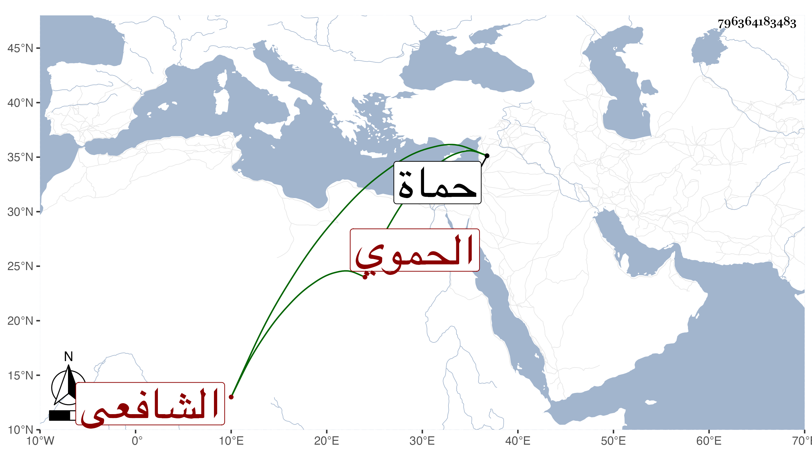

0902Sakhawi.DawLamic.ITO20230111-ara1.EIS1600.796364183483
Biography ID: 796364183483
386
محمد بن محمد بن علي بن محمد بن أحمد بن محمد بن محمد بن نصر الله بن مرضى ناصر الدين بن الشهاب بن النور بن الزين الحموي الشافعي والد الزين أبي البركات محمد الآتي ويعرف بابن المغيزل . ولد سنة خمس وخمسين وسبعمائة وأخذ عن الشرف يعقوب بن عبد الرحيم بن عثمان خطيب القلعة وغيره وكتب الحكم بحماة ، لقيه شيخنا في أواخر سنة ست وثلاثين وترجمه هكذا في قريبه عبد الله بن أحمد المذكور في نسبه من درره . مات قريب الأربعين ظنا .
